Can functions \(f(x,y)\) of two variables be approximated using Taylor polynomials?
When it comes to the horizontal wind, what are translation, divergence, vorticity, and deformation?
How can we use meteorological data to write a first-degree Taylor polynomial in two variables that models the horizontal wind? How is this Taylor polynomial related to translation, divergence, vorticity, and deformation?
Taylor polynomials work the same way for functions of two variables as they do for functions of one variable. Rather than the first and second degree approximations having graphs that are lines and parabolas, the graphs are planes and paraboloids Figure 7.2.1. The coefficients for the Taylor polynomials in two variables involve partial derivatives.
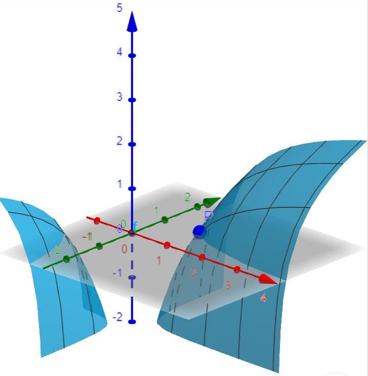
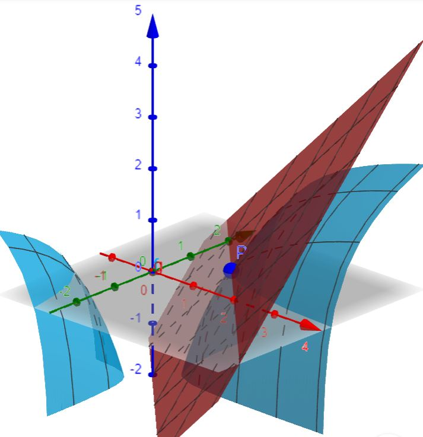
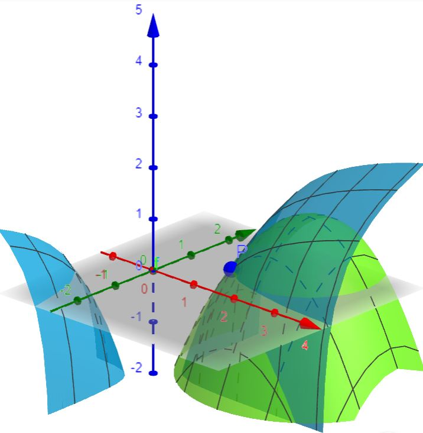
Figure7.2.1.Left: A surface \(f(x,y)\text{.}\) Middle: A surface \(f(x,y)\) together with the degree one Taylor approximation \(P_1(x,y)\) whose graph is a plane. Right: A surface \(f(x,y)\) together with the degree two Taylor approximation \(P_2(x,y)\) whose graph is a paraboloid.
Subsection7.2.1Linear Approximations in Two Variables
The best linear approximation near \(x=0\) to a differentiable function \(f(x)\) is the degree one Taylor polynomial (i.e. the tangent line or local linearization)
For functions of two variables, when \(f\) has continuous first-order partials, the local linearization (i.e. tangent plane) near \((x,y)=(0,0)\) is the degree one Taylor polynomial
\begin{equation*}
f(x,y) \approx f(0,0) + \left[ \frac{\partial f}{\partial x}(0,0)\right] x + \left[ \frac{\partial f}{\partial y}(0,0)\right] y.
\end{equation*}
Example7.2.2.Linear Approximation to \(f(x)=e^{-x-y}\).
The best linear approximation to \(f(x) = e^{-x}\) at \(x=0\) is the tangent line:
The best linear approximation to \(f(x,y)=e^{-x-y}\) at \((x,y)=(0,0)\) is the tangent plane:
\begin{equation*}
f(x,y) \approx 1 - x - y.
\end{equation*}
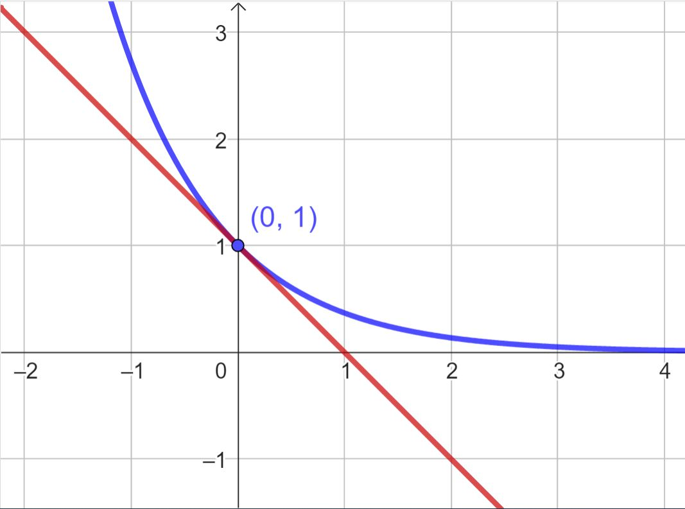
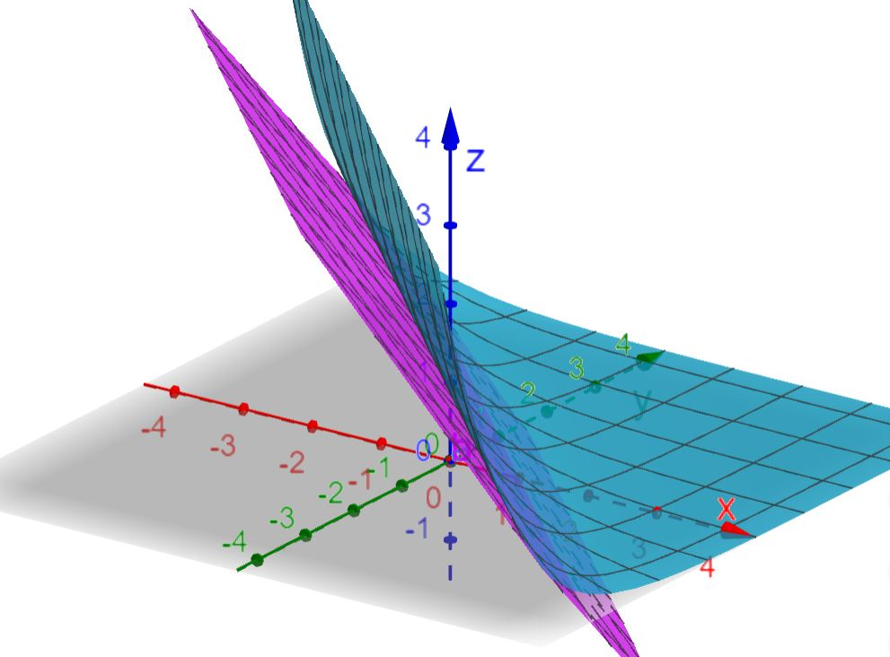
Figure7.2.3.Left: The tangent line to \(f(x) = e^{-x}\) at \(x=0\) is a first-degree Taylor approximation (i.e. linear approximation) \(P(x)=1-x\text{.}\) Right: The tangent plane to \(f(x,y) = e^{-x-y}\) at \(x=0\) is a first-degree Taylor approximation (i.e. linear approximation) \(P(x,y)=1-x-y\text{.}\)
Subsection7.2.2Quadratic Approximations in Two Variables
What does a second-degree Taylor approximation look like? As mentioned earlier, the graphs of first and second-degree approximations to functions of two variables \(f(x,y)\) are planes and paraboloids (Figure 7.2.4). Contrast this to the graphs of first and second-degree approximations to functions \(f(x)\) of one variable that are lines and parabolas.
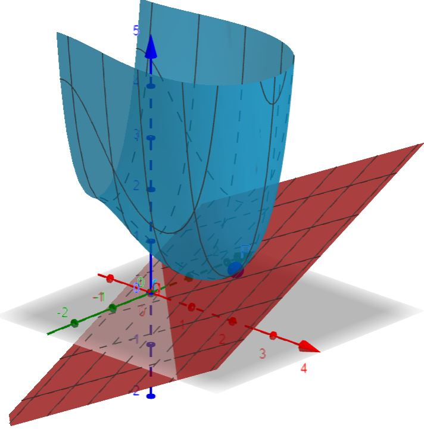
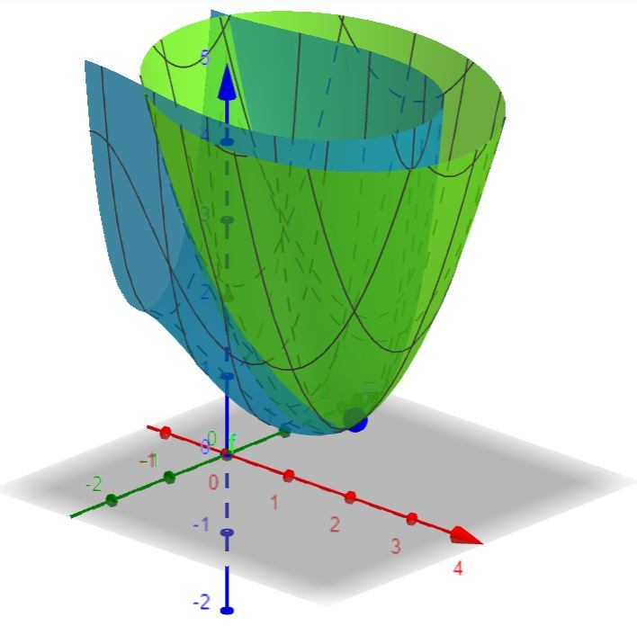
Figure7.2.4.Left: The graph of a first-degree Taylor approximation to \(f(x,y)\) is a plane described by \(P_1(x,y)=c_0 + c_1(x-a) + c_2(y-b)\text{.}\) Right: The graph of the second-degree Taylor approximation to \(f(x,y)\) is a paraboloid described by \(P_2(x,y)=c_0 + c_1(x-a) + c_2(y-b)+c_3(x-a)^2 + c_4(x-a)(y-b) + c_5(y-b)^2\text{.}\)
It is instructive to compare the two-variable case to that of one variable. To that end, recall that the best quadratic approximation near \(x=0\) to a differentiable function of one variable \(f(x)\) is the second-degree Taylor polynomial
For functions of two variables, when \(f\) has continuous second-order partials, the second-degree Taylor polynomial approximating \(f\) near \((x,y)=(0,0)\) is
The graph of this quadratic is a parabola. The best quadratic approximation to \(f(x,y)=e^{-x-y}\) at \((x,y)=(0,0)\) is
\begin{equation*}
f(x,y) \approx 1 - x - y + \frac{1}{2}x^2 + xy + \frac{1}{2}y^2.
\end{equation*}
The graph of this quadratic is a paraboloid.
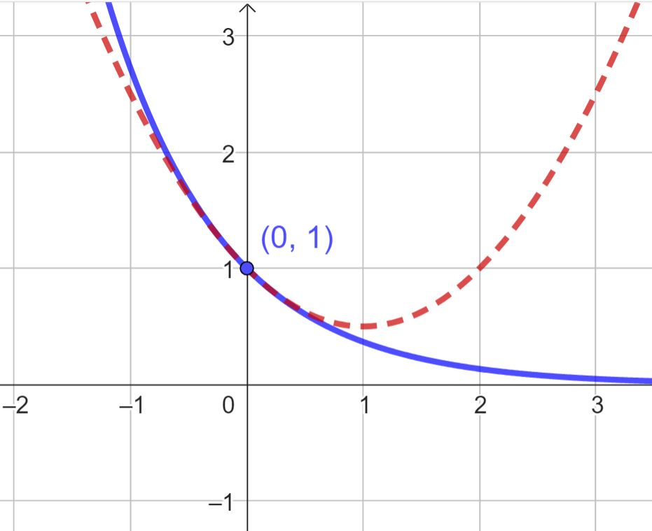
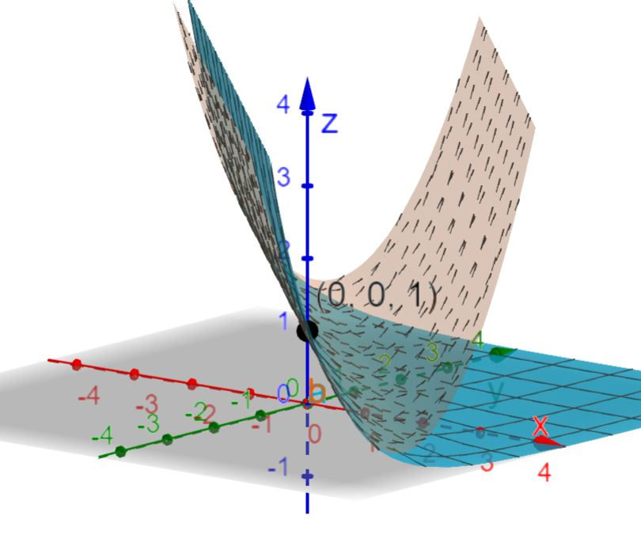
Figure7.2.6.Left: The second-degree Taylor approximation to \(f(x) = e^{-x}\) at \(x=0\) is \(P(x)=1-x-\frac{1}{2}x^2\text{.}\) Right: The second-degree Taylor approximation to \(f(x,y) = e^{-x-y}\) at \(x=0\) is \(\displaystyle P(x,y)=1-x-y+\frac{1}{2}x^2 + xy + \frac{1}{2}y^2\text{.}\)
Second-degree Taylor approximations in two variables at a point \((a,b)\) instead of \((0,0)\) are given by
Section7.2.1Translations, Divergence, Vorticity, and Deformation
The motion of an air parcel is a combination of five different motions - translation, divergence, vorticity (or rotation), stretching (or strain deformation), and shearing (or shear deformation). For simplicity, we will focus on two-dimensional air parcels at the moment.
Translation simply moves the air parcel without stretching it, shearing it, rotating, or changing its area. There are no partial derivatives of velocities involved with translation.
Horizontal divergence, \(\delta\text{,}\) is represented by \(\displaystyle \frac{\partial u}{\partial x} + \frac{\partial v}{\partial y}\text{.}\) As we have already studied, divergence measures the expansion or contraction of air parcels. When the divergence is positive, the air parcel grows; when divergence is negative, the air parcel shrinks. Adding \(\displaystyle \frac{\partial w}{\partial z}\) to the horizontal divergence gives three-dimensional divergence.
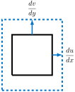
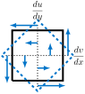
Figure7.2.2.Left: Horizontal divergence. Here, \(\frac{\partial u}{\partial x}\) and \(\frac{\partial v}{\partial y}\) are both positive. Right: The vertical component \(\zeta\) of vorticity. Here, \(\zeta = \frac{\partial v}{\partial x}- \frac{\partial u}{\partial y}\) is positive (in the diagram, \(\frac{\partial v}{\partial x}\) is positive and \(\frac{\partial u}{\partial y}\) is negative). The air parcel simply rotates counter-clockwise.
Vorticity, \(\zeta\text{,}\) is represented by \(\displaystyle \frac{\partial v}{\partial x} - \frac{\partial u}{\partial y}\text{.}\) Though vorticity of the 3-D wind \(\vec{v}\) is actually a vector cross product \(\nabla \times \vec{v}\text{,}\) and hence a vector itself, the value of \(\zeta\) is only the vertical component of the vorticity (and hence a scalar). Vorticity is positive if there is positive (counter-clockwise) rotation and negative if there is negative (clockwise) rotation.
Both divergence and vorticity are used to infer upward motion. Divergence can be used to compute vertical velocities, and it measures the rate of expansion or contraction of an air parcel. Vorticity measures the spin, and can be defined as relative vorticity (spin due to the winds) or absolute vorticity (wind spin plus spin of the earth).
Stretching (strain deformation), \(D_{st}\text{,}\) is represented by \(\displaystyle \frac{\partial u}{\partial x} - \frac{\partial v}{\partial y} \text{.}\) When \(D_{st} > 0\text{,}\)\(u\) becomes more positive as \(x\) becomes more positive. Likewise, \(u\) becomes more negative as \(x\) becomes more negative (so that the derivative is always positive). This makes the parcel grow in the \(x\) direction. In the other direction, \(v\) becomes more negative as \(y\) becomes more positive and \(v\) becomes more positive and \(y\) becomes more negative (so that the derivative is always negative), making the parcel shrink in the \(y\) direction (see Figure 7.2.3). The total area of the air parcel will remain the same if \(\displaystyle \frac{\partial u}{\partial x} = \frac{\partial v}{\partial y}\text{.}\) Shown in Figure 7.2.3 is positive stretching deformation; negative stretching deformation occurs when the parcel is stretched in the \(y\) direction.
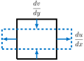
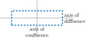
Figure7.2.3.Stretching deformation. In this example \(\frac{du}{dx}\) is positive and \(\frac{dv}{dy}\) is negative. The axis of confluence is in the direction that confluence is occurring; the axis of diffluence is in the direction that diffluence is occurring.
Shearing (or shearing deformation), \(D_{sh}\) is represented by \(\displaystyle \frac{\partial v}{\partial x} + \frac{\partial u}{\partial y}\text{.}\) In this case, \(v\) gets more positive as \(x\) gets more positive and \(v\) gets more negative as \(x\) gets more negative, resulting in the air parcel part at lower \(x\) getting pushed towards lower \(y\text{,}\) and the air parcel part at higher \(x\) getting pushed towards higher \(y\text{.}\) At the same time, \(u\) gets more positive as \(y\) gets more positive and \(u\) gets more negative as \(y\) gets more negative, resulting in the air parcel part at lower \(y\) getting pushed to lower \(x\) and the air parcel part at higher \(y\) getting pushed to higher \(x\) (Figure 7.2.4). The total area of the air parcel remains the same after the shearing occurs. Shearing deformation is positive when the air parcel stretches in the southwest/northeast direction and contracts in the southeast/northwest direction (Figure 7.2.4). Shearing deformation is negative when the parcel stretches in the southeast/northwest direction and contracts in the southwest/northeast direction.
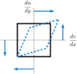
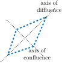
Figure7.2.4.Shearing. In this example both \(\frac{dv}{dx}\) and \(\frac{du}{dy}\) are positive. The axis of confluence is in the direction that confluence is occurring; the axis of diffluence is in the direction that diffluence is occurring.
As Figure 7.2.3 and Figure 7.2.4 show, both stretching and shearing cause stretching along the axis of diffluence and contraction along the axis of confluence, with the two axes at right angles to each other. These deformations result in weather fronts. In both cases, these motions cause some parts of the air parcel to move away from each other and some parts of the air parcel to move towards each other. The air coming together is called frontogenesis.
Section7.2.2Kinematics of the Horizontal Wind Field
Any horizontal wind field \(\vec{u}(x,y)= u(x,y)\vec{i}+v(x,y)\vec{j}=\langle u(x,y), v(x,y) \rangle\) can be defined using a Taylor series expansion about a point \((x_0,y_0)\text{.}\) The first-degree Taylor expansion can be described by
You may think of this as saying that the wind at location \((x,y)\) is the same as the wind at location \((x_0,y_0)\) modified by the gradient (think rate of change) times the distance between these two locations. That is,
Let’s now take the first-degree Taylor expansion of the horizontal wind \(u(x,y)\) from (7.1) and rewrite it in terms of the major kinematic properties - divergence \(\delta\text{,}\) vorticity \(\zeta\text{,}\) stretching deformation \(D_{st}\text{,}\) and shearing deformation \(D_{sh}\text{.}\) For simplicity, we will take \((x_0,y_0)\) to be \((0,0)\) and will denote \(u(x_0,y_0)=u(0,0) = u_0\text{,}\)\(\displaystyle \frac{\partial u}{\partial x}(x_0,y_0) = \frac{\partial u}{\partial x}(0,0) = \left[ \frac{\partial u}{\partial x}\right]_0\text{,}\) and \(\displaystyle \frac{\partial u}{\partial y}(x_0,y_0) = \frac{\partial u}{\partial y}(0,0) = \left[ \frac{\partial u}{\partial y}\right]_0\text{.}\) Then, writing the whole as the sum of two halves, we get
For the northern component \(v\) of the horizontal wind, note that the deformation term is negative.
Example7.2.1.Modeling the Horizontal Wind in Redwood Falls.
Surface observations (station plots) near Redwood Falls, Minnesota on January 28, 2024 are shown on the map in Figure 7.2.2 and table in Table 7.2.3. Marshall is located 60 km (32.4 nautical miles) west of Redwood Falls. Olivia is located 35 km (18.9 nautical miles) north of Redwood Falls. Winthrop is located 61 km (32.9 nautical miles) east of Redwood Falls. Jeffers is located 62 km (33.5 nautical miles) south of Redwood Falls.
Table7.2.3.Surface observations near Redwood Falls
Location
Wind direction
Wind speed (kts)
\(u\) (kts)
\(v\) (kts)
Marshall (KMML)
\(230^{\circ}\)
8
6.13
5.14
Olivia (KOVL)
\(210^{\circ}\)
5
2.50
4.33
Redwood Falls (KRWF)
\(200^{\circ}\)
5
1.71
4.70
Winthrop (MN032)
\(175^{\circ}\)
6
-0.52
5.98
Jeffers (MN071)
\(235^{\circ}\)
10
8.19
5.74
For the horizontal wind vector \(\langle u, v \rangle\text{,}\) we estimate the divergence \(\delta\text{,}\) the vorticity \(\zeta\text{,}\) stretching \(D_{st}\text{,}\) and shearing \(D_{sh}\) at KRWF (Redwood Falls).
Belview is located 3.9 nautical miles north and 9.1 nautical miles west of Redwood Falls. Using the first-degree Taylor expansion, estimate the wind vector \(\langle u, v\rangle \) in Belview.
Surface observations (station plots) near Jackson, Minnesota on March 17, 2024 are shown in Figure 7.2.5 and in Table 7.2.6. Worthington is located 26.3 nautical miles west of Jackson. Windom is located 16.0 nautical miles north of Jackson. Welcome is located 16.3 nautical miles east of Jackson. Terril (IA) is located 19.6 nautical miles south of Jackson.
Estimate the divergence \(\delta = \frac{\partial u}{\partial x} + \frac{\partial v}{\partial y}\) at Jackson.
Estimate the vorticity \(\zeta = \frac{\partial v}{\partial x} - \frac{\partial u}{\partial y}\) at Jackson.
Estimate the stretching deformation \(D_{st} = \frac{\partial u}{\partial x} - \frac{\partial v}{\partial y}\) at Jackson.
Estimate the shearing deformation \(D_{sh} = \frac{\partial u}{\partial y} + \frac{\partial v}{\partial x}\) at Jackson.
Give the first-degree Taylor expansion of the eastern component of the horizontal wind \(u(x,y)\) at Jackson.
Give the first-degree Taylor expansion of the northern component of the horizontal wind \(v(x,y)\) at Jackson.
Lake Park (IA) is 13.6 nautical miles west of Jackson and 10.9 nautical miles south of Jackson. Use the Taylor expansion of the horizontal wind found in (e) and (f) to estimate the horizontal wind \(\langle u, v \rangle\) at Lake Park.